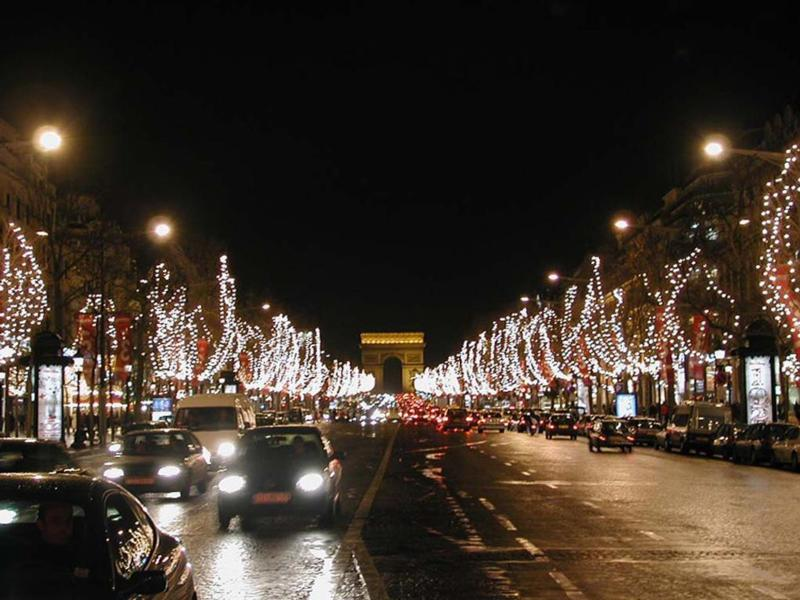
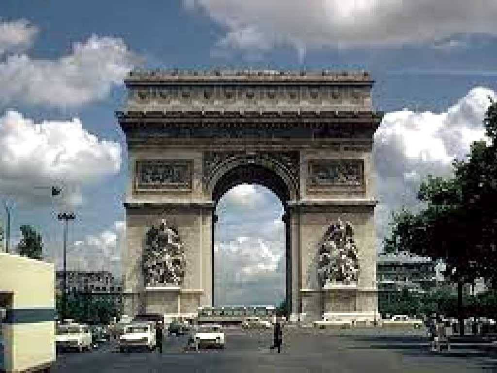
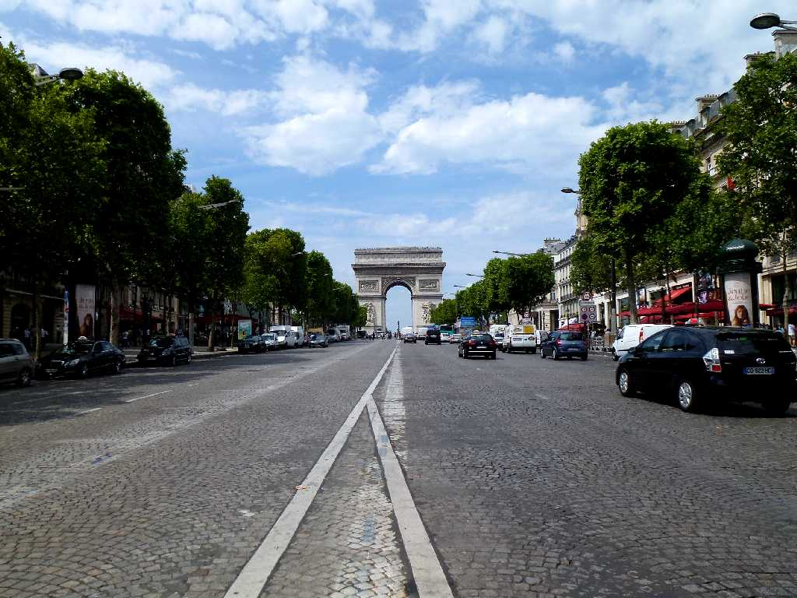
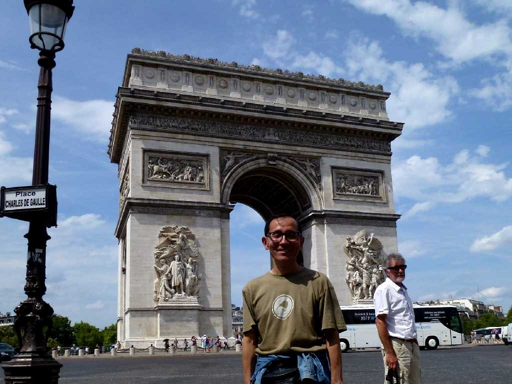
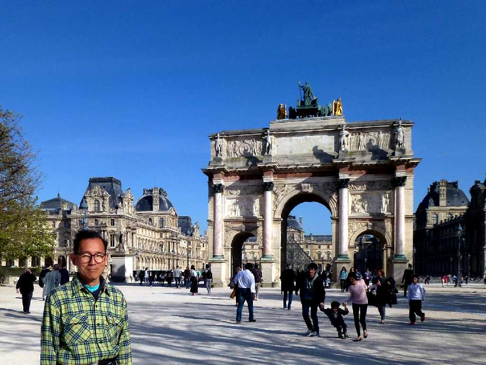

August 1973 Champs Elysees Paris
凱旋門から伸びるシャンゼリゼ大通りは草原だったこの地に１６１６年マリー・ド・メディシスが「女王の遊歩道」を建設したことに始まりその後並木を植えギリシア神話の楽園「エリューオン」(神々に愛された人々が死後幸福な生活を営むとされた野)にちなんでシャンゼリゼ(エリゼの園)と名付けられた

Arc de Triomphe
凱旋門はナポレオンの命令によりアウステルリッツの戦いに勝利した記念に古代ローマにならいフランス軍の栄光を称えるため１８０６年から約３０年かけて完成し高さ約４５ｍの門には多くの高浮彫り彫刻で飾られている

Champs Elysees Paris
８０日間世界一周鉄道の旅で４３日目 学生時代以来約４０年ぶりの再訪問

August 5 2013 Arc de Triomphe

March 20 2014 Arc de Triomphe du Carrousel Paris
モロッコ周遊の旅で帰国便のパリ乗り継ぎを利用し８０日間世界一周鉄道の旅以来８ヶ月ぶりにパリのゲストハウスに滞在して観光 カルーゼル凱旋門にてエトワール凱旋門は改修工事中でした